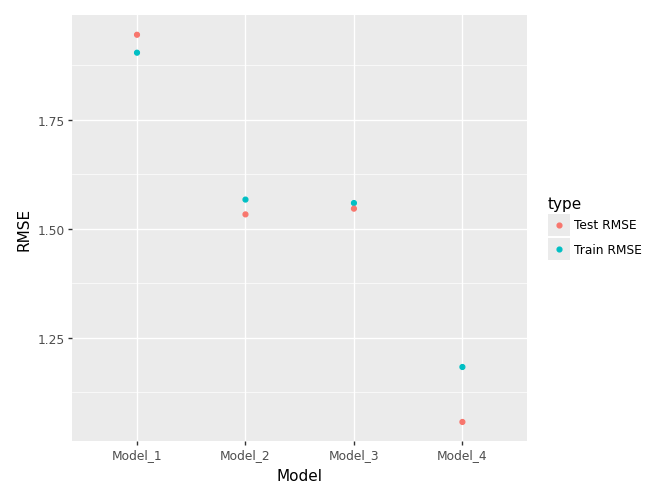

# !pip install palmerpenguinsPalmer Penguins Modeling
Import the Palmer Penguins dataset and print out the first few rows.
Suppose we want to predict bill_depth_mm using the other variables in the dataset.
Dummify all variables that require this.
from palmerpenguins import load_penguinsimport pandas as pd
import numpy as npdf = load_penguins()
df = df.dropna().copy()df['year'] = df['year'].astype("category")dummies = pd.get_dummies(df[['species', 'island', 'sex', 'year']], drop_first=True) * 1
df = pd.concat([df, dummies], axis = 1)Let’s use the other variables to predict bill_depth_mm. Prepare your data and fit the following models on a training dataset subset of the entire dataset:
- Four different models, each containing a different set of predictor variables
Create a plot like the right plot of Fig 1. in our Model Validation chapter with the training and test error plotted for each of your four models.
Which of your models was best?
# !pip install scikit-learnfrom sklearn.model_selection import train_test_split
from sklearn.linear_model import LinearRegression
from sklearn.metrics import mean_squared_error, root_mean_squared_error, r2_score# I split the data prior to running any regressions
X_train, X_test, y_train, y_test = train_test_split(df.drop(['bill_depth_mm'], axis=1), df['bill_depth_mm'], shuffle=True, random_state=321, test_size = .25)models = {
"Model_1": ['bill_length_mm'],
"Model_2": ['bill_length_mm', 'flipper_length_mm'],
"Model_3": ['bill_length_mm', 'flipper_length_mm', 'body_mass_g'],
"Model_4": ['bill_length_mm', 'flipper_length_mm', 'body_mass_g', 'sex_male']
}scale = pd.DataFrame()
scale['bill_length_mm'] = np.linspace(min(df['bill_length_mm']), max(df['bill_length_mm']), 1000)
scale['flipper_length_mm'] = np.linspace(min(df['flipper_length_mm']), max(df['flipper_length_mm']), 1000)
scale['body_mass_g'] = np.linspace(min(df['body_mass_g']), max(df['body_mass_g']), 1000)
scale_female = scale.copy()
scale_female['sex_male'] = 0
scale_male = scale.copy()
scale_male['sex_male'] = 1rows = []
predictions_male = pd.DataFrame()
predictions_female = pd.DataFrame()
for name, Xcols in models.items():
X_train_loop = X_train[Xcols]
model = LinearRegression().fit(X_train_loop, y_train)
y_train_ = model.predict(X_train_loop[Xcols])
X_train_loop[f"{name}_predict"] = y_train_
y_test_ = model.predict(X_test[Xcols])
test_mse = mean_squared_error(y_test, y_test_)
test_rmse = test_mse ** .5
test_r2 = r2_score(y_test, y_test_)
train_mse = mean_squared_error(y_train, y_train_)
train_rmse = train_mse ** .5
train_r2 = r2_score(y_train, y_train_)
predictions_male[name] = pd.Series(
model.predict(scale_male[Xcols]),
index=scale_male['bill_length_mm']
)
predictions_female[name] = pd.Series(
model.predict(scale_female[Xcols]),
index=scale_female['bill_length_mm']
)
rows.append({"Model": name,
"Train MSE": train_mse,
"Train RMSE": train_rmse,
"Train R2": train_r2,
"Test MSE": test_mse,
"Test RMSE": test_rmse,
"Test R2": test_r2})pd.DataFrame(rows)| Model | Train MSE | Train RMSE | Train R2 | Test MSE | Test RMSE | Test R2 | |
|---|---|---|---|---|---|---|---|
| 0 | Model_1 | 3.626628 | 1.904371 | 0.060812 | 3.785294 | 1.945583 | 0.023740 |
| 1 | Model_2 | 2.455883 | 1.567126 | 0.364000 | 2.350489 | 1.533130 | 0.393789 |
| 2 | Model_3 | 2.431133 | 1.559209 | 0.370410 | 2.390958 | 1.546272 | 0.383351 |
| 3 | Model_4 | 1.398748 | 1.182687 | 0.637766 | 1.116119 | 1.056466 | 0.712143 |
df_male = df[df['sex_male'] == 1]
df_female = df[df['sex_male'] == 0]df_male.plot.scatter(x='bill_length_mm', y='bill_depth_mm')
predictions_male['Model_1'].plot.line(c = "red")
predictions_male['Model_2'].plot.line(c = "orange")
predictions_male['Model_3'].plot.line(c = "yellow")
predictions_male['Model_4'].plot.line(c = "purple")df_female.plot.scatter(x='bill_length_mm', y='bill_depth_mm')
predictions_female['Model_1'].plot.line(c = "red")
predictions_female['Model_2'].plot.line(c = "orange")
predictions_female['Model_3'].plot.line(c = "yellow")
predictions_female['Model_4'].plot.line(c = "purple")df_error = pd.DataFrame(rows)
df_error_long = df_error[["Model", "Train RMSE", "Test RMSE"]].melt(id_vars=["Model"], value_name = "RMSE", var_name = "type")
df_error_long| Model | type | RMSE | |
|---|---|---|---|
| 0 | Model_1 | Train RMSE | 1.904371 |
| 1 | Model_2 | Train RMSE | 1.567126 |
| 2 | Model_3 | Train RMSE | 1.559209 |
| 3 | Model_4 | Train RMSE | 1.182687 |
| 4 | Model_1 | Test RMSE | 1.945583 |
| 5 | Model_2 | Test RMSE | 1.533130 |
| 6 | Model_3 | Test RMSE | 1.546272 |
| 7 | Model_4 | Test RMSE | 1.056466 |
# !pip install plotnine
from plotnine import ggplot, aes, geom_point(ggplot(df_error_long,
aes(x = "Model",
y = "RMSE",
color = "type")) +
geom_point())
I don’t really know what flexibilty measure to use, so I settled on comparing the RMSE of the models using the above visual.